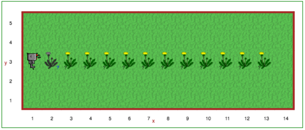

Dažnai norime pakartoti instrukcijų seriją tam tikrą kiekį kartų. Pavyzdžiui, 8 lygyje reikėjo pasakyti Robotukui,
kad jis nuolat atliktų tą patį veiksmą. Pitonas turi savo būdų kaip tai realizuoti, tačiau mes pradėsime nuo
paprastų konstrukcijų. Dabar naudosime repeat kartojimo būdą, kuris paprastesnis už Pitono komandas,
tačiau būdingas tik Robotuko pasauliui. Pitonas naudoja for ciklus (apie juos papasakosiu vėliau),
kurie užrašomi taip:
for i in range(n):
# čia būtų
# kelios
# komandos
Robotuko pasaulyje galime užrašyti repeat ciklą tokiu būdu:
repeat n: # kur n yra sveikas skaičius, toks kaip 3 ar 7
# čia būtų
# kelios
# komandos
Dėmesio
repeat komanda neveiks kitose Pitono aplinkose, tiktai Robotuko pasaulyje.
Ciklas yra instrukcijų blokas, kuris kartojamas. Kiekvienas kartas, kai ciklas pakartojamas yra vadinamas iteracija. Taigi, žemiau esantis kodas turi 4 iteracijas.
Šis kodas lieps Robotukui nubrėžti kvadratą:
repeat 4:
pirmyn()
suktis_kairėn()
Naudodami repeat kartojimą galime perrašyti ankstesnes programas taip, kad jose neliktų pasikartojančių
instrukcijų:
def suktis_dešinėn():
repeat 3:
suktis_kairėn()
Galite pakoreguoti kodą, kurį išsaugojote bibliotekos skirtuke, panaudodami pakartojimo bloką.
Mokytojams
Pagrindas, kodėl standartinį Pitoną papildėme repeat komanda, yra tas, kad nereikėtų vienu metu
pristatyti ciklų, kintamųjų, integruotų funkcijų (tokių kaip range) ir funkcijos argumentų sąvokos.
Pagal kūrėjų sumanymą n repeat cikle privalo būti sveikasis skaičius; tai
negali būti kintamasis. Kai mokiniai sužinos apie kintamuosius, jie turėtų išmokti tinkamą Pitono sintaksę ciklams
realizuoti ir pamiršti nestandartinę repeat instrukciją.
Atidaryk Robotuko aplinkos 9 lygį.
Pakeiskite 8 lygio metu sukurtą programą, šį kartą naudodami du kartojimo ciklus. Veiksmai nesiskirs, tačiau jūsų sprendimas turėtų būti daug gražesnis. Nepamirškite naudoti komentarų, kad sprendimas būtų lengviau skaitomas!
Lygis 8: Klauskite Turinys Testas 1: repeat, if, def